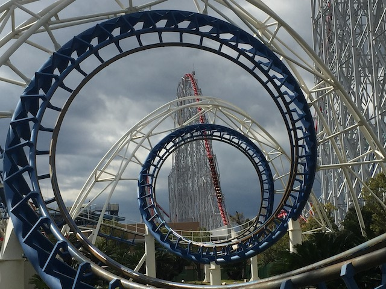
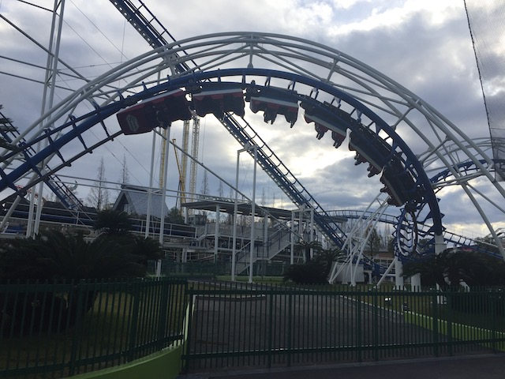
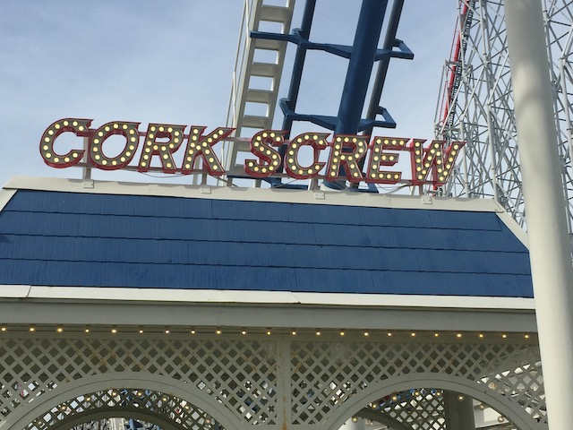

| |
Corkscrew Review

We're here at Nagashima Spaland. Today's ride we'll be reviewing for you is Corkscrew. Once you get in the cars and pull down the OTSRs, you're off. After a small dip and turn, we begin to climb up the lifthill. As you climb the lifthill, you get a lovely view of Nagashima Spaland and all the coasters. I enjoy looking over at Steel Dragon, Arashi, Free Fall, and the other rides. But before you can say anything else, you go into the turnaround and down the drop. The drop isn't too bad. Just a typical Arrow Drop. Then you dip up and go through another turn. Still nothing special. Don't expect any laterals over here. Then you roll through two corkscrews. The corkscrews are all right. I mean, they're not any better than your typical ordinary corkscrews, but at least they don't hurt. So consider that to be good news. We then go through a big turn and into the brake run. I'm sorry, but I find the Arrow Corkscrews to be a boring ride simply because they don't do much. Just drop, turn, corkscrews, brakes. Vekoma has a MUCH better standard corkscrew model. While I can respect the standard Arrow Corkscrew layout for being the coaster layout to have proper inversions (Not counting those death traps in the early 1900s that pulled 14 Gs). But yeah, by todays standards, it's just really boring. But hey, at least it's not painful like the horrible clone at Michigan's Adventure. Just ride it and get the credit. There's much better rides at Nagashima Spaland.
6/10
Location: Nagashima Spaland
Opened: 1979
Built by: Arrow
Last Ridden: October 31, 2018
I have ridden this exact same ride at the following parks.
Canobie Lake Park
Michigan's Adventure
Silverwood
Toshimaen
Corkscrew Photos



Home
|